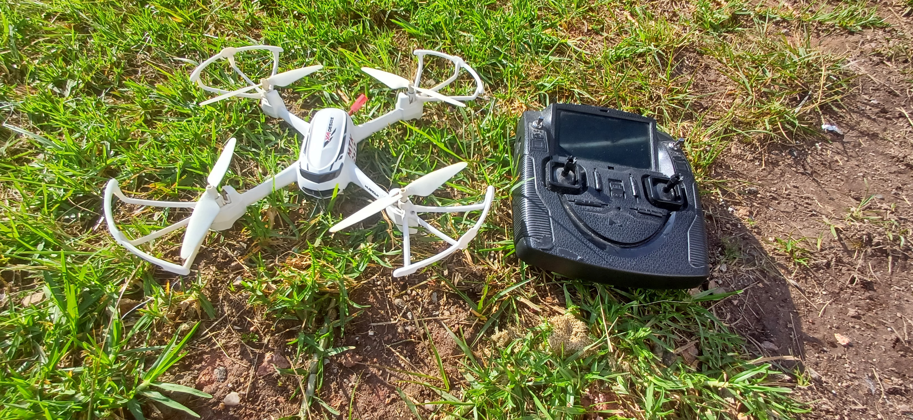
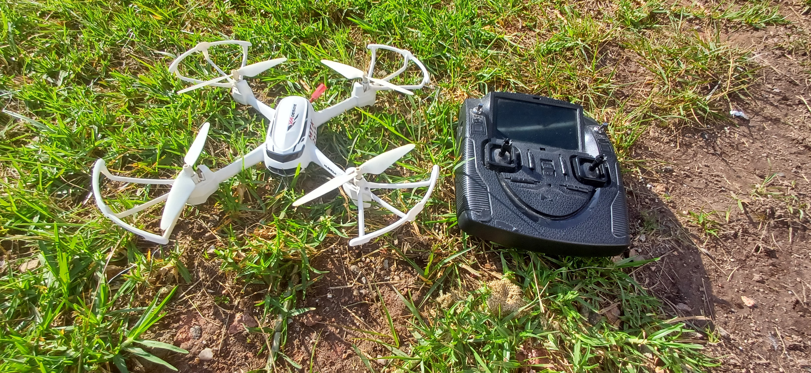

Bienvenido al Futuro
FU
TU
RO
Bienvenido al Futuro


Durante mucho tiempo, el campo fue escenario de un trabajo intenso y marcado por el esfuerzo físico, donde la producción dependía directamente de la fuerza humana y de técnicas artesanales transmitidas de generación en generación.

Hoy en día, la tecnología ha modernizado el campo con máquinas, drones y sistemas inteligentes, haciendo la producción más eficiente y sostenible.
Observa en las imágenes cómo la innovación está presente en cada etapa:


.png)

El campo y la ciudad mantienen una relación vital: mientras el campo produce, la ciudad consume e impulsa la economía. Esta interconexión garantiza el abastecimiento de alimentos, fortalece el comercio y las comunidades.

La integración entre el campo y la ciudad genera empleo, mueve la economía y promueve el desarrollo regional. Valora el trabajo rural y mejora la calidad de vida en las comunidades productoras.

Las prácticas sostenibles garantizan una producción responsable, respetando los recursos naturales. La agricultura orgánica, el manejo ecológico y el uso racional del agua aseguran alimentos saludables y preservan el medio ambiente.
La tecnología está presente en el campo para transformar la forma en que se producen los alimentos. Con el aumento de la población mundial y la demanda de una producción más rápida y sostenible, se volvió esencial modernizar el sector agrícola. Hoy en día, el campo cuenta con tractores automatizados, drones para el monitoreo de cultivos, sensores de humedad en el suelo, riego inteligente e incluso inteligencia artificial para predecir cosechas. Estas innovaciones ayudan a los agricultores a tomar decisiones más precisas, ahorrar recursos, reducir el desperdicio y proteger el medio ambiente. Además, la tecnología también mejora la calidad de vida en el campo, ofreciendo más confort, seguridad y conectividad a quienes viven y trabajan lejos de los centros urbanos.
“La factura de luz del riego era de R$ 500 a R$ 800 al mes. Después de instalar los paneles solares, bajó a R$ 10.”
— Juliano Luiz dos Santos, agricultor de São José do Belmonte (PE).
Aumentó la producción de maracuyá después de instalar un sistema fotovoltaico de 3,3 kWp con seis paneles de 550W. La energía solar permitió ahorrar e reinvertir en la propiedad.
Según datos de ANEEL, el número de sistemas fotovoltaicos en zonas rurales creció un 63% de 2021 a 2022: de 42,9 mil a 70,2 mil conexiones.
Fuente: Canal Solar

Monitorean cultivos e identifican plagas.
Controlan el riego con precisión, evitando el desperdicio de agua.
Realizan la siembra y la cosecha con mayor rapidez.
Organizan datos sobre el clima, el suelo y la producción, ayudando en la toma de decisiones.
 


Paraná alberga una de las mayores redes de cooperativas agrícolas de América Latina, como Coamo, con sede en Campo Mourão. Estas cooperativas son responsables de más del 60% de la producción de granos del estado, fortaleciendo la integración entre el campo y la ciudad, según datos de la Organización de Cooperativas de Paraná (Ocepar, 2023).